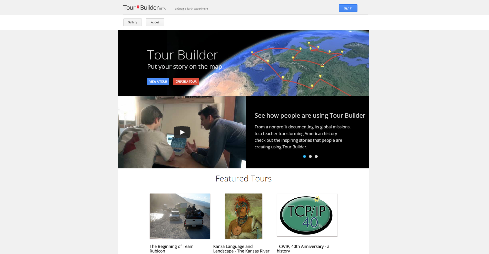
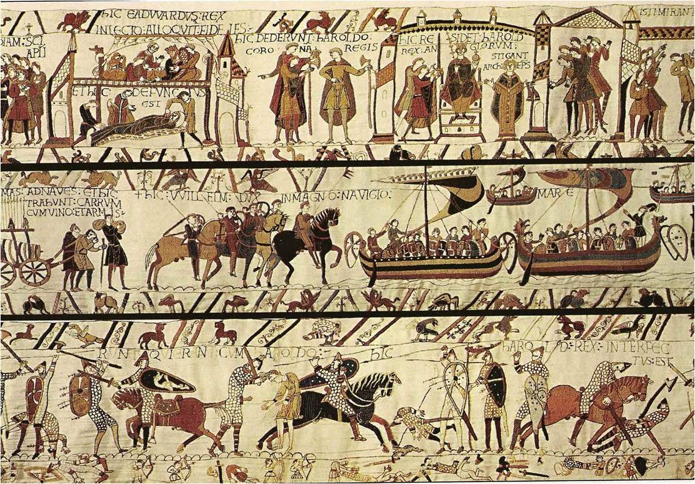
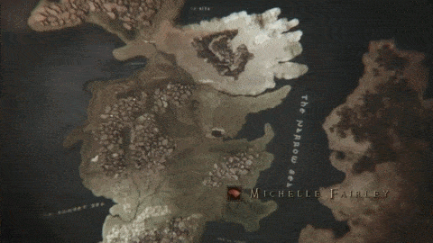
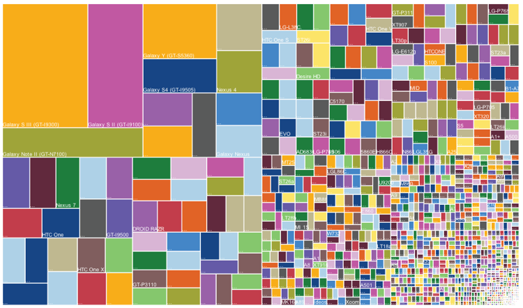
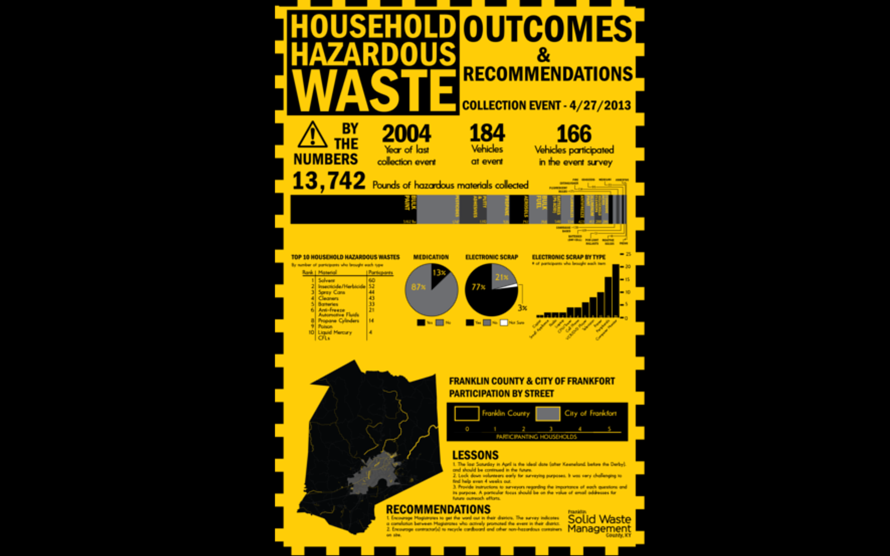
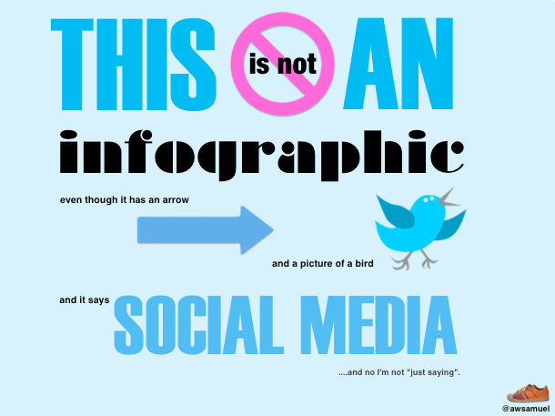

About Me:
- Ryan Cooper
- GIS Technician
- Georgetown-Scott County Planning Commission
- rcooper@gscplanning.com
- @rmcooper4
Where's the Story?
Two main questions:
- Why do story maps often times not tell a story?
- How do we ensure our story maps tell a story?
Two main questions:
- Why do story maps often times not tell a story?
- How do we ensure our story maps tell a story?
Two main questions:
- Why do story maps often times not tell a story?
- How do we ensure our story maps tell a story?
Two main questions:
- Why do story maps often times not tell a story?
- How do we ensure our story maps tell a story?
What is a story?
Let's start with a dictionary definition
Merriam-Webster
What is a
story?
- an account of incidents or events
- a news article or broadcast
- the intrigue or plot of a narrative or dramatic work
- lie, falsehood
Story as a set of elements:
- setting
- plot
- characters
- conflict
- theme
Story as a collection of answers to the questons:
- who?
- what?
- where?
- when?
- why?
- how?
Robert Kosara offers 2 complementary ways of defining story
1. noun-based
stories contain:
- facts
- causal relationships
- narrative sequence
2. action-based
stories actively:
- tie facts together
- present a particular interpretation of those facts
- provide a narrative path through those facts
Working definition → "conventional definition"
| noun-based |
action-based |
| facts |
tie facts together |
| causal relationships |
present a particular interpretation of those facts |
| narrative sequence |
provide a narrative path through those facts |
Working definition → "conventional definition"
| noun-based |
action-based |
| facts |
tie facts together |
| causal relationships |
present a particular interpretation of those facts |
| narrative sequence |
provide a narrative path through those facts |
How does ESRI talk about story and story maps?
Lots of platforms for making story maps...
Story Map
MapStory
StoryMapJS

Odyssey
Tour Builder
All these platforms have the same basic functionality
Some of my concerns about story could be applied to them as well...
...but ESRI can steer and has steered definitions
ArcGIS = GIS, right?
Couldn't ESRI define the story map too?

Story Map
"Story maps use geography as a means of organizing and presenting information.
They tell the story of a place, event, issue, trend, or pattern in a geographic context.
They combine interactive maps with other rich content—text, photos, video, and audio—within user experiences that are basic and intuitive."
To summarize...
ESRI's story maps:
- organize content geographically
- place information in a geographic context
- contain multi-media content
- provide a pleasant UX
"Story maps use interactive web maps created with ArcGIS Online, Esri's cloud-based mapping and GIS system.
ArcGIS web maps let you combine your own data, including spreadsheets and GIS data, with authoritative content and thematic maps from Esri and the GIS community, on top of our beautiful basemaps.
The web maps support visualization, queries, analytics, and pop-ups for map features with rich content including photos and graphs."
To summarize...
ESRI's story map elements include:
- web-based map (AGOL)
- data
- content
How is ESRI defining "story"?
Step 1: What is the story you are trying tell?
What are the essential components of your story?
Remember our conventional definition?
Stories include...
...facts...
...an interpretation of those facts...
...and a narrative path through those facts
Returning to ESRI's prompt...
What are the essential components of your story?
ESRI's essential components:
maps
photos
videos
text
content = story
How does that line up with our conventional definition of story?
content does consist of facts
content could include some interpretation of those facts...
It could also not
content could be linked together with a narrative path...
...but a narrative path is not inherent to content
Whereas narrative is conventionally used to organize a story's content...
...by ESRI's definition, the map is content & organizer
Because content = story...
...and that content → Story Map platform...
...anything made with the Story Map platform tells a story
We're working with radically different definitions of story
You might be thinking...
...if I make a map using the Story Map platform...
...and it communicates what I want it to communicate...
...who cares what we call these things?!?!?!
A fair point
But story has a...

...long...
...long...
...long...
...history.
Of course, maps have been a part of that history
Why redefine story?
What might we gain from using a conventional definition of story?
Dataviz might help us
Similar experience with infographics
Lots of information
Who cares?
What should I get out of this?

"[D]ata isn't all that interesting (to most people)...
...People want to know what their data says..."
Story as a way to present information more effectively
How is story defined in dataviz?
Working definition → "conventional definition"
| noun-based |
action-based |
| facts |
tie facts together |
| causal relationships |
present a particular interpretation of those facts |
| narrative sequence |
provide a narrative path through those facts |
Why story?
- users look for stories
- guide to "valid inferences"
- capture attention
Why story?
- users look for stories
- guide to "valid inferences"
- capture attention
Why story?
- users look for stories
- guide to "valid inferences"
- capture attention
"Your job as a data designer is to communicate what you know to your audience.
They most likely didn't look at the data, so they might not see the same thing that you see if there's no explanation or setup."
Nathan Yau
Why story?
- users look for stories
- guide to "valid inferences"
- capture attention
"Stories are great vehicles to get people interested,
to give them some orientation,
and to
guide them far enough into a world so that they can do their own exploration."
Alberto Cairoand to guide them far enough into a world
so that they can do their own exploration."
Alberto CairoStory is a psychological hook
"[P]eople who listen to stories can undergo a profound change in their experience of reality."
Why story?
- users look for stories
- guide to "valid inferences"
- capture attention
So far...
- What is a story, generally?
- How does ESRI define story?
- How does dataviz define story?
- How is dataviz discussing story?
What next?
How do we get story back into story maps?
- Platforms don't tell stories, people do
- content != story
- story is the main organizational structure
- draw inspiration from storytelling disciplines
How do we get story back into story maps?
- Platforms don't tell stories, people do
- content != story
- story is the main organizational structure
- draw inspiration from storytelling disciplines
How do we get story back into story maps?
- Platforms don't tell stories, people do
- content != story
- story is the main organizational structure
- draw inspiration from storytelling disciplines
How do we get story back into story maps?
- Platforms don't tell stories, people do
- content != story
- story is the main organizational structure
- draw inspiration from storytelling disciplines
How do we get story back into story maps?
- Platforms don't tell stories, people do
- content != story
- story is the main organizational structure
- draw inspiration from storytelling disciplines
cinema, theater, & television
literature & poetry
dance & music
journalism
How do we get story back into story maps?
- Platforms don't tell stories, people do
- content != story
- story is the main organizational structure
- draw inspiration from storytelling disciplines
Thank you!